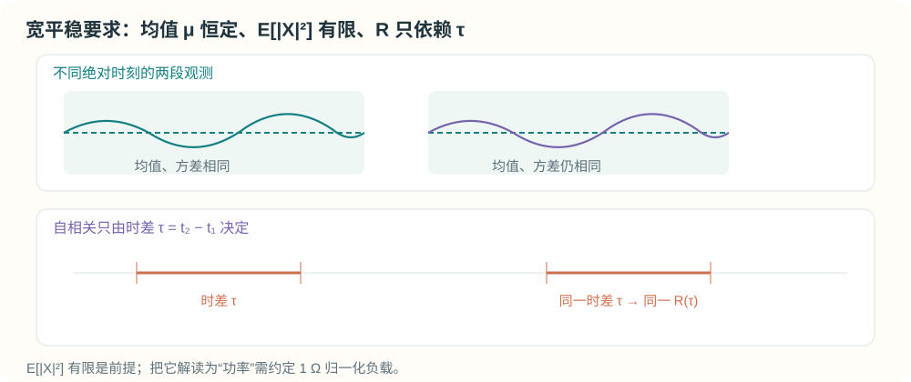
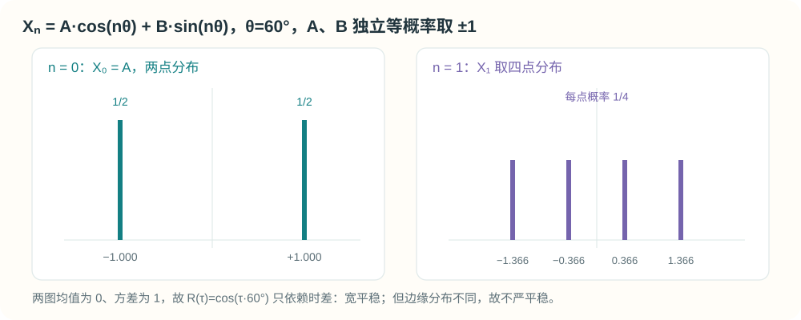
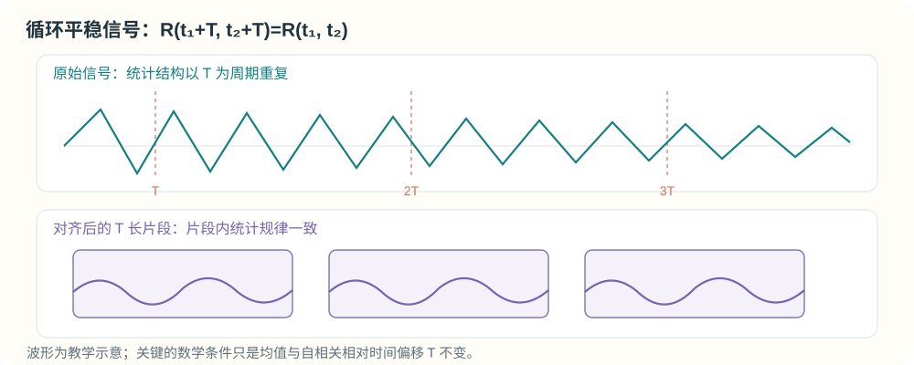

CHAPTER 08 · 随机过程与谱
平稳随机信号
为什么今天测到的均值可以代表明天的信号？把“统计规律不随时间原点改变”写成可检验的条件，需要区分严平稳与宽平稳、自相关与自协方差，并说清高斯过程为何是唯一的等价特例。
- 写出严平稳与宽平稳的定义并指出各自的验证对象
- 判断“严平稳 ⇒ 宽平稳”需要什么前提，以及高斯反向等价的原因
- 给出一个宽平稳但不严平稳的显式反例，并说明联合平稳与循环平稳
凭什么把不同时刻的观测当成同一个分布？
把同一台接收机在上午和下午各录一分钟噪声，如果要用上午的均值和方差去预测下午的行为，你实际上假定了“统计规律不随时间原点改变”。把这句话写成可检验的条件，就是宽平稳（wide-sense stationary, WSS）。
定义之前先约定时差方向：本章统一取 τ=t₂−t₁，即后者减前者。复值信号的归一化、离散序列的索引约定将在第 09、第 14 章重申。宽平稳要求同时满足三条：
注意第二条是均方有限。由柯西-施瓦茨不等式，E[|X|]≤√E[X²]，所以均方有限已隐含均值有限；在第一条均值恒定的前提下，均方有限与方差有限等价。把它写成均方有限只是因为这更贴近定义本身，不必先假设均值存在。第三条只约束自相关；自协方差随之满足 CX(τ)=RX(τ)−|μX|²，两者只在 μX=0 时重合。

平稳不等于无波动：白噪声均值恒为 0、方差恒定，是宽平稳的，但它每一刻都在剧烈振荡。平稳描述的是波动的规律不变，而不是波形不变。
严平稳比宽平稳强在哪里？
严平稳（strict-sense stationary, SSS）要求：对任意正整数 n、任意时刻 t₁,…,tn 与任意平移 τ₀，有限维分布完全不变。
两者之间有一个方向是无条件成立的，这一点常被写错：只要二阶矩存在，严平稳就一定是宽平稳。取 n=1 得到均值恒定，取 n=2 得到联合分布只依赖时差，因而 RX 也只依赖 τ。反过来则不然。
| 比较项 | 严平稳 SSS | 宽平稳 WSS |
|---|---|---|
| 约束对象 | 全有限维联合分布 | 均值、自相关（前二阶） |
| 前提 | 无（无需矩） | 二阶矩存在 |
| 推导方向 | SSS + 二阶矩 ⇒ WSS | WSS ⇒ SSS 一般不成立 |
| 验证难度 | 工程上不可逐项验证 | 可用分段统计近似检查 |
| 频域用途 | 需附加二阶矩条件才可用 | 直接支持维纳-辛钦定理 |
常见误写：“严平稳是高斯过程才有的概念”或“严平稳自动是宽平稳且反之”。正确表述是：严平稳加二阶矩存在⇒宽平稳；反向需要额外条件，而高斯过程恰好提供了这个条件（见下节）。
为什么只有高斯过程能让两个定义重合？
称 X(t) 为高斯过程，如果对任意有限个时刻，向量 (X(t₁),…,X(tn)) 服从联合多维高斯分布。这个“联合”很关键：只要每个时刻的边缘都是高斯、但联合分布不是高斯（例如两向量的依赖是非线性的），就不能用下面的等价性。
高斯向量的分布完全由均值向量与协方差矩阵决定。在宽平稳前提下，均值恒定；而协方差矩阵的元素 Cov(X(ti),X(tj)) 只依赖时差 tj−ti。把整个时间轴平移 τ₀ 后，任意有限维协方差矩阵的每个元素不变，而均值向量也不变，所以平移前后是同一个多维高斯分布。由此得到：
这给出一个非常实用的判据：只要确认一个高斯信号的均值恒定、自相关只依赖时差，就可以把它当作严平稳处理，不必再检查高阶矩——因为它们都由前两阶矩完全决定。
不要外推：非高斯过程完全没有这个便利。下一节会给出一个宽平稳但不严平稳的显式反例，它的边缘分布随时间改变。把“不相关即独立”或“宽平平即严平稳”当作普适规则，都会在非高斯环境中出错。
反例：宽平稳但连边缘分布都不恒定
取两个独立、等概率取 ±1 的随机变量 A 与 B，令 θ=π/3，定义离散时间过程 Xn=A·cos(nθ)+B·sin(nθ)，n 为整数。
先看二阶量。因为 E[A]=E[B]=0、E[A²]=E[B²]=1、E[AB]=0，展开乘积期望后发现交叉项消失：
均值恒为 0、均方恒为 1、自相关只依赖 n−m，所以它是宽平稳的。但把 n=0 与 n=1 的边缘分布都写出来，差别立刻显现：X0=A 只在 ±1 取值（各 1/2）；而 X1=A/2+B(√3/2) 在四个不同值 ±(1+√3)/2、±(1−√3)/2 上各取 1/4。两者均值为 0、方差为 1，但分布不同，因此不严平稳。

为什么选 θ=π/3？若改取 θ=π/2，旋转 90° 会把支持集的四个角点 {(±1,±1)} 映回自身，使 (X₀,X₁) 与 (X₁,X₂) 同分布，反而成为严平稳。π/3 的旋转不保持该四点分布，边缘分布才会随 n 真正改变。
多路信号与周期性统计：联合平稳、循环平稳
当系统里同时有多个信号时，各自的平稳性还不够，还需要它们之间的互相关也只依赖时差。称 X(t) 与 Y(t) 联合宽平稳，若两者各自宽平稳，且 RXY(t₁,t₂) 只依赖 t₂−t₁。这为第 12 章分析线性系统输入-输出关系提供了前提：输入宽平稳且系统线性时不变时，输入与输出是联合平稳的。
很多真实信号的统计特性不是恒定，而是周期变化：通信信号的符号速率、周期性采样时钟都会在统计量上留下周期性。若存在 T>0 使均值与自相关相对时间偏移 T 不变，则称过程是循环平稳（宽意义下）：

交叉陷阱：一个循环平稳信号既不是宽平稳的，也不能简单地用普通功率谱描述——它的时变统计量会产生不能忽略的离散谱线。直接套用平稳公式会遗漏这些谱成分，即使它看起来“差不多”是平稳的。
把反例的每个数都算出来
用四个等概率结果 ((1,0),(0,1),(−1,0),(0,−1)) 代替 (A,B) 的分布，直接做集合平均。
from math import pi, cos, sin, isclose
pts = [(1, 0), (0, 1), (-1, 0), (0, -1)] # (A, B), each with prob 1/4
th = pi/3
def X(n, A, B):
return A*cos(n*th) + B*sin(n*th)
def R(n, m):
return sum(X(n, a, b)*X(m, a, b) for a, b in pts)/4
def Xn(n):
return sorted({round(X(n, a, b), 6) for a, b in pts})
# 1) WSS: R depends only on the lag n-m
assert all(isclose(R(n, m), cos((n-m)*th), abs_tol=1e-12)
for n in range(-3, 4) for m in range(-3, 4))
# 2) constant mean and unit variance for every n
for n in range(-3, 4):
vals = [X(n, a, b) for a, b in pts]
assert isclose(sum(vals)/4, 0, abs_tol=1e-12)
assert isclose(sum(v*v for v in vals)/4, 1, abs_tol=1e-12)
# 3) but marginals differ: 2 atoms at n=0, 4 atoms at n=1
assert len(Xn(0)) == 2 and len(Xn(1)) == 4
自检：为什么“宽平稳”不能写成“自协方差只依赖时差”？
可以，但前提是均值恒定。恒等式 CX(τ)=RX(τ)−|μ|² 说明在均值恒定的前提下两者等价；若均值随时间变化，自相关不会被“只依赖时差”的单个条件固定。
自检：把上述反例的 (A,B) 换成独立标准高斯，得到的过程严平稳吗？
严平稳。此时它是高斯过程，宽平稳已成立，由 (8.3) 自动升格为严平稳，边缘分布也不再随时间改变。
参考与核查依据
- MIT OpenCourseWare · Random Processes：平稳、宽平稳与奇平稳的定义，以及高斯过程阶矩特征。
- ProbabilityCourse · Stationary Processes：严平稳与宽平稳的对比及自相关性质。
- ProbabilityCourse · Autocorrelation and PSD：宽平稳前提与维纳-辛钦定理的衔接。